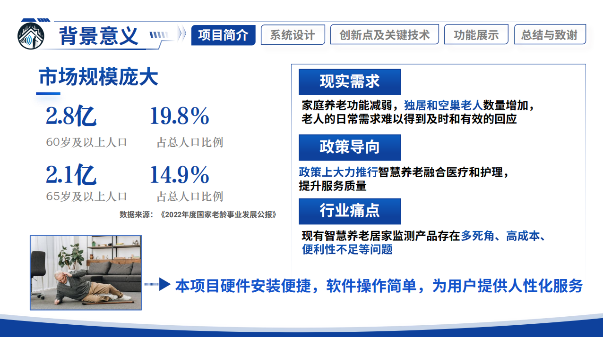
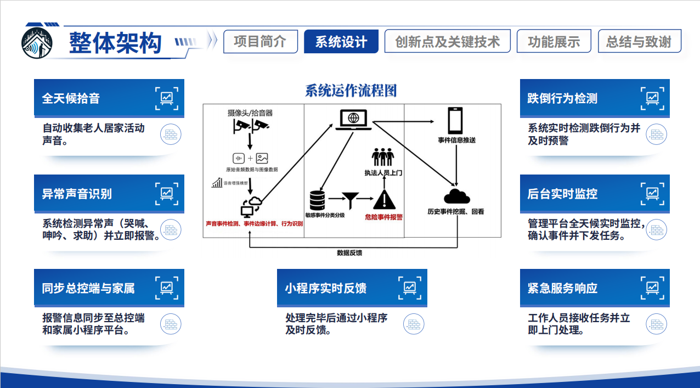
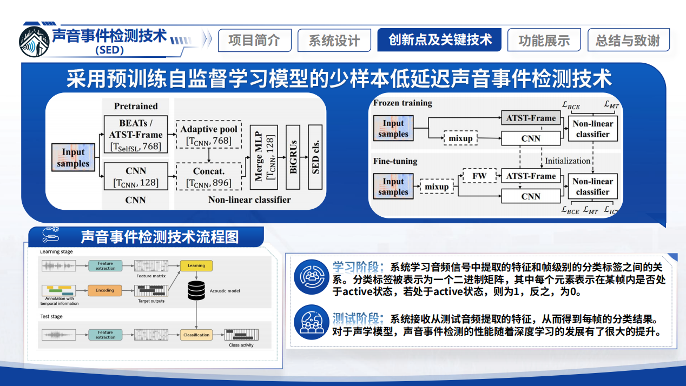
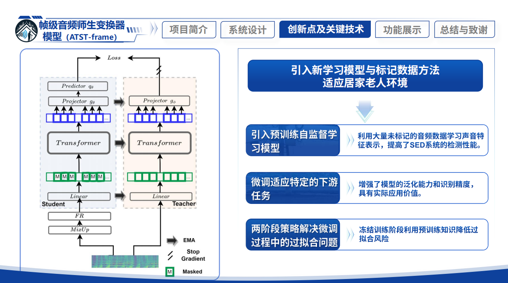
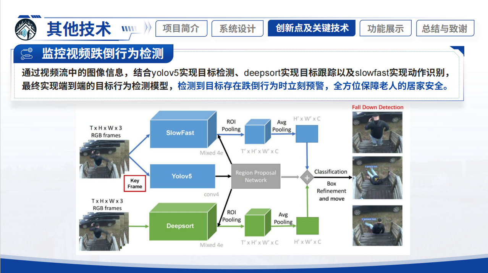
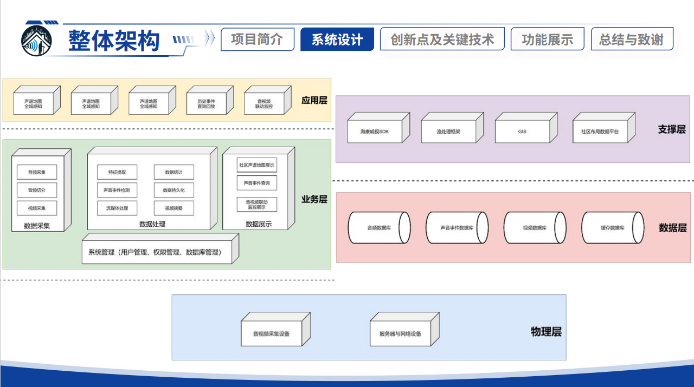
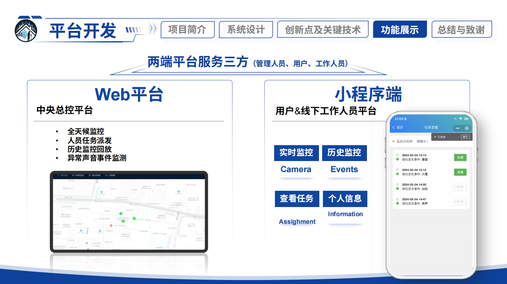
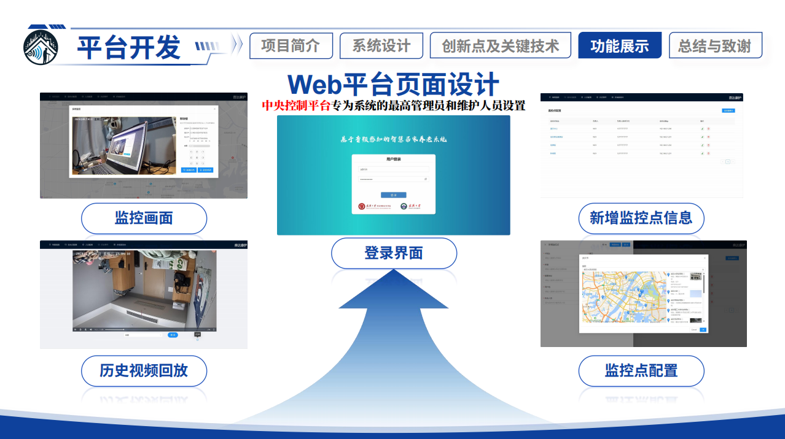
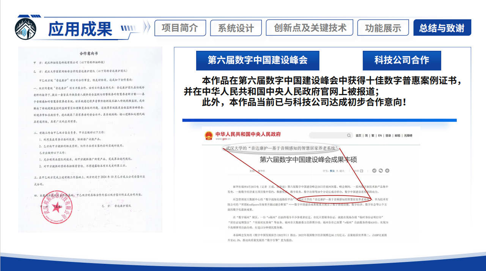

项目背景
我国的老龄化趋势难以逆转，智慧养老需求显著增长。2022年，中国60岁及以上人口已达2.8亿，占总人口比例19.8%；65岁及以上人口达到2.1亿，占总人口比例14.9%。随着家庭养老功能的减弱，独居和空巢老人数量增加，他们的日常需求难以得到及时有效的回应。
政策层面大力推行智慧养老，旨在融合医疗和护理，提升服务质量。然而，现有智慧养老居家监测产品存在监控死角多、成本高、便利性不足等问题。本项目旨在解决这些痛点，特别是为无子女照顾的老人提供安全监测（占所有老人的70%）。

音达康护的解决方案
针对现有智慧养老监测的不足，我们提出并设计了“音达康护”——基于先进的音频感知技术和声音事件检测算法的智慧居家养老监测系统。该系统致力于通过科技与人文关怀的融合，为现代居家养老提供全新解决方案。
- 实时监测与准确识别： 通过全天候拾音，系统能实时检测老人的居家活动声音，如跌倒行为、异常声音（哭喊、呻吟、求助），并立即报警或预警。
- 简易部署与操作便捷： 硬件安装便捷，软件操作简单，为用户提供人性化服务。
- 智能预警与社区支持： 发生紧急情况时，系统能自动联系社区支持，并同步信息至总控端及家属小程序，确保及时响应与处理。
- 增值服务： 提供日常物资购买、健康咨询等服务，全面提升老年人生活质量。

系统核心技术
“音达康护”系统通过以下核心技术模块，构建了完整的居家养老安全防护体系：
- 声音事件检测 (SED) 技术： 采用预训练自监督学习模型的少样本低延迟声音事件检测技术，对音频信号进行特征提取与分类，识别特定声音事件。
- 帧级音频师生变换器模型 (ATST-frame)： 利用大量未标记的音频数据学习声音特征表示，引入新学习模型与标记数据方法，适应居家老人环境，提高检测性能和模型泛化能力。
- 敏感音源活动检测与增强技术： 通过UNet模型预测并去除噪声，得到降噪音频，显著提高敏感声音事件的识别精度和清晰度，有效应对复杂声学环境。
- 监控视频跌倒行为检测： 结合YOLOv5目标检测、DeepSORT目标跟踪及SlowFast动作识别技术，实现端到端的视频跌倒行为检测模型，及时预警。
- 多平台支持： 包括Web中央总控平台（供管理员使用）和小程序端（供用户及线下工作人员使用），实现全天候监控、历史回放、任务派发与实时反馈。



系统架构与平台
系统整体架构清晰，分为应用层、业务层、支撑层、数据层和物理层，确保系统稳定高效运行。数据通过音视频采集设备收集，经过处理和分析后，在各平台进行展示和管理。
- 系统E-R图： 清晰展示了家庭用户、监控点、事件、管理人员和任务之间的关系。
- Web平台： 中央控制平台，提供用户登录、监控画面查看、新增监控点、历史视频回放、监控点配置等功能。
- 小程序端： 用户及线下工作人员平台，支持实时监控、历史事件查看、任务查看、个人信息管理等。
- 终端设备： 采用高清摄像头（如海康威视设备）和高品质麦克风，支持高效音视频处理、数据保存、远程访问和实时数据传输。



应用成果与合作
“音达康护”项目不仅在技术上有所突破，也积极寻求实际应用与合作。
- 荣誉认证： 本作品在第六届数字中国建设峰会中获得“十佳数字音惠案例”证书，并被中华人民共和国中央人民政府官网报道。
- 企业合作： 已与武汉某科技有限公司达成初步合作意向，共同推进项目的试验和应用。
- 产业链定位： 项目定位于智慧养老产业链的中游，提供基于物联网、云计算和人工智能技术的智慧养老监护设备和服务。
